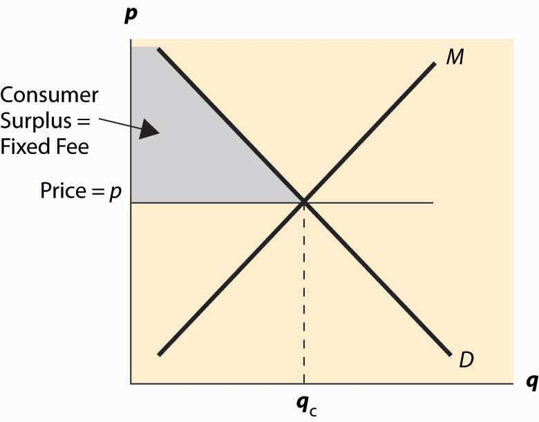
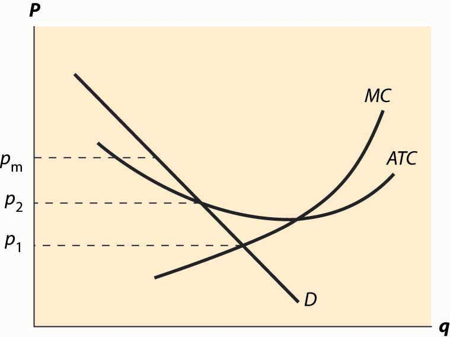

We have spent a great deal of time on the competitive model, and we now turn to the polar opposite case, that of monopoly.
A monopolyA firm that faces a downward sloping demand and has a choice about what price to charge. is a firm that faces a downward sloping demand and has a choice about what price to charge—without fearing of chasing all of its customers away to rivals.
There are very few pure monopolies. The U.S. post office has a monopoly in first-class mail but faces competition from FedEx and other express-mail companies, as well as from fax and e-mail providers. Microsoft has a great deal of market power, but a small percentage of personal computer users choose Apple or Linux operating systems. In contrast, there is only one U.S. manufacturer of aircraft carriers.
However, many firms have market powerThe ability to increase their price above marginal cost and sustain sales for a long period of time. or monopoly power, which means that they can increase their price above marginal cost and sustain sales for a long period of time.These terms are used somewhat differently among authors. Both terms require downward sloping demand and usually some notion of sustainability of sales. Some distinguish the terms by whether they are “large” or not; others by how long the price increase can be sustained. We won’t need such distinctions here. The theory of monopoly is applicable to such firms, although they may face an additional and important constraint: A price increase may affect the behavior of rivals. This behavior of rivals is the subject of the next chapter.
A large market share is not proof of a monopoly, nor is a small market share proof that a firm lacks monopoly power. For example, U.S. Air dominated air traffic to Philadelphia and Pittsburgh but still lost money. Porsche has a small share of the automobile market—or even the high-end automobile market—but still has monopoly power in that market.
There are three basic sources of monopoly. The most common source is to be granted a monopoly by the government, either through patents—in which case the monopoly is temporary—or through a government franchise. Intelsat was a government franchise that was granted a monopoly on satellite communications, a monopoly that ultimately proved quite lucrative. Many cities and towns license a single cable TV company or taxi company, although usually basic rates and fares are set by the terms of the license agreement. New drugs are granted patents that provide the firms monopoly power for a period of time. (Patents generally last 20 years, but pharmaceutical drugs have their own patent laws.) Copyright also confers a limited monopoly for a limited period of time. Thus, the Disney Corporation owns copyrights on Mickey Mouse—copyrights that, by law, should have expired but were granted an extension by Congress each time they were due to expire. Copyrights create monopoly power over music as well as cartoon characters. Time Warner owns the rights to the song “Happy Birthday to You” and receives royalties every time that it is played on the radio or other commercial venue.Fair-use provisions protect individuals with noncommercial uses of copyrighted materials. Many of the Beatles’ songs that Paul McCartney coauthored were purchased by Michael Jackson.
A second source of monopoly is a large economy of scale. The scale economy needs to be large relative to the size of demand. A monopoly can result when the average cost of a single firm serving the entire market is lower than that of two or more firms serving the market. For example, long-distance telephone lines were expensive to install, and the first company to do so, AT&T, wound up being the only provider of long-distance service in the United States. Similarly, scale economies in electricity generation meant that most communities had a single electricity provider prior to the 1980s, when new technology made relatively smaller scale generation more efficient.
The demand-side equivalent of an economy of scale is a network externalitySituation that arises when others’ use of a product makes it more valuable to each consumer.. A network externality arises when others’ use of a product makes it more valuable to each consumer. Standards are a common source of network externality. Since AA batteries are standardized, it makes them more readily accessible, helps drive down their price through competition and economies of scale, and thus makes the AA battery more valuable. They are available everywhere, unlike proprietary batteries. Fax machines are valuable only if others have similar machines. In addition to standards, a source of network externality is third-party products. Choosing Microsoft Windows as a computer operating system means that there is more software available than for Macintosh or Linux, as the widespread adoption of Windows has led to the writing of a large variety of software for it. The JVC Video Home System of VCRs came to dominate the Sony Beta system, primarily because there were more movies to rent in the VHS format than in the Beta format at the video rental store. In contrast, recordable DVDs have been hobbled by incompatible standards of DVD+R and DVD-R, a conflict not resolved even as the next generation—50 GB discs such as Sony’s Blu-ray—starts to reach the market. DVDs themselves were slow to be adopted by consumers because few discs were available for rent at video rental stores, which is a consequence of few adoptions of DVD players. As DVD players became more prevalent and the number of discs for rent increased, the market tipped and DVDs came to dominate VHS.
The third source of monopoly is control of an essential, or a sufficiently valuable, input to the production process. Such an input could be technology that confers a cost advantage. For example, software is run by a computer operating system and needs to be designed to work well with the operating system. There have been a series of allegations that Microsoft kept secret some of the “application program interfaces” used by Word as a means of hobbling rivals. If so, access to the design of the operating system itself is an important input.
Even a monopoly is constrained by demand. A monopoly would like to sell lots of units at a very high price, but a higher price necessarily leads to a loss in sales. So how does a monopoly choose its price and quantity?
A monopoly can choose price, or a monopoly can choose quantity and let the demand dictate the price. It is slightly more convenient to formulate the theory in terms of quantity rather than price, because costs are a function of quantity. Thus, we let p(q) be the demand price associated with quantity q, and c(q) be the cost of producing q. The monopoly’s profits are
The monopoly earns the revenue pq and pays the cost c. This leads to the first-order condition for the profit-maximizing quantity qm:
The term is known as marginal revenueThe derivative of revenue pq with respect to quantity.. It is the derivative of revenue pq with respect to quantity. Thus, a monopoly chooses a quantity qm where marginal revenue equals marginal cost, and charges the maximum price p(qm) that the market will bear at that quantity. Marginal revenue is below demand p(q) because demand is downward sloping. That is,
Figure 15.1 Basic monopoly diagram

The choice of monopoly quantity is illustrated in Figure 15.1 "Basic monopoly diagram". The key points of this diagram are fivefold. First, marginal revenue lies below the demand curve. This occurs because marginal revenue is the demand p(q) plus a negative number. Second, the monopoly quantity equates marginal revenue and marginal cost, but the monopoly price is higher than the marginal cost. Third, there is a deadweight loss, for the same reason that taxes create a deadweight loss: The higher price of the monopoly prevents some units from being traded that are valued more highly than they cost. Fourth, the monopoly profits from the increase in price, and the monopoly profit is shaded. Fifth, since—under competitive conditions—supply equals marginal cost, the intersection of marginal cost and demand corresponds to the competitive outcome. We see that the monopoly restricts output and charges a higher price than would prevail under competition.
We can rearrange the monopoly pricing formula to produce an additional insight: or
The left-hand side of this equation (price minus marginal cost divided by price) is known as the price-cost marginPrice minus marginal cost over price. or Lerner Index.Abba Lerner (1903–1982). Note that which is used in the derivation. The right-hand side is one divided by the elasticity of demand. This formula relates the markup over marginal cost to the elasticity of demand. It is important because perfect competition forces price to equal marginal cost, so this formula provides a measure of the deviation from competition and, in particular, says that the deviation from competition is small when the elasticity of demand is large, and vice versa.
Marginal cost will always be greater than or equal to zero. If marginal cost is less than zero, the least expensive way to produce a given quantity is to produce more and throw some away. Thus, the price-cost margin is no greater than one; and, as a result, a monopolist produces in the elastic portion of demand. One implication of this observation is that if demand is everywhere inelastic (e.g., for a > 1), the optimal monopoly quantity is essentially zero, and in any event would be no more than one molecule of the product.
In addition, the effects of monopoly are related to the elasticity of demand. If demand is very elastic, the effect of monopoly on prices is quite limited. In contrast, if the demand is relatively inelastic, monopolies will increase prices by a large margin.
We can rewrite the formula to obtain
Thus, a monopolist marks up marginal cost by the factor at least when ε > 1. This formula is sometimes used to justify a “fixed markup policy,” which means that a company adds a constant percentage markup to its products. This is an ill-advised policy, not justified by the formula, because the formula suggests a markup that depends upon the demand for the product in question, and thus not a fixed markup for all products that a company produces.
Consider a monopolist with cost c = 3q.
A tax imposed on a seller with monopoly power performs differently than a tax imposed on a competitive industry. Ultimately, a perfectly competitive industry must pass on all of a tax to consumers because, in the long run, the competitive industry earns zero profits. In contrast, a monopolist might absorb some portion of a tax even in the long run.
To model the effect of taxes on a monopoly, consider a monopolist who faces a tax rate t per unit of sales. This monopolist earns
The first-order condition for profit maximization yields
Viewing the monopoly quantity as a function of t, we obtain with the sign following from the second-order condition for profit maximization. In addition, the change in price satisfies
Thus, a tax causes a monopoly to increase its price. In addition, the monopoly price rises by less than the tax if or
This condition need not be true but is a standard regularity condition imposed by assumption. It is true for linear demand and increasing marginal cost. It is false for constant elasticity of demand, ε > 1 (which is the relevant case, for otherwise the second-order conditions fail), and constant marginal cost. In the latter case (constant elasticity and marginal cost), a tax on a monopoly increases price by more than the amount of the tax.
Pharmaceutical drugs for sale in Mexico are generally priced substantially below their U.S. counterparts. Pharmaceutical drugs in Europe are also cheaper than in the United States, although not as inexpensive as in Mexico, with Canadian prices usually falling between the U.S. and European prices. (The comparison is between identical drugs produced by the same manufacturer.)
Pharmaceutical drugs differ in price from country to country primarily because demand conditions vary. The formula shows that a monopoly seller would like to charge a higher markup over marginal cost to customers with less elastic demand than to customers with more elastic demand because is a decreasing function of ε, for ε > 1. Charging different prices for the same product to different customers is known as price discriminationCharging distinct customers different prices for the same good.. In business settings, it is sometimes known as value-based pricing, which is a more palatable term to relay to customers.
Computer software vendors often sell a “student” version of their software, usually at substantially reduced prices, but require proof of student status to qualify for the lower price. Such student discounts are examples of price discrimination, and students have more elastic demand than business users. Similarly, the student and senior citizen discounts at movies and other venues sell the same thing—a ticket to the show—for different prices, and thus qualify as price discrimination.
In order for a seller to price discriminate, the seller must be able to
Arbitrage is also known as “buying low and selling high,” and represents the act of being an intermediary. Since price discrimination requires charging one group a higher price than another, there is potentially an opportunity for arbitrage, arising from members of the low-price group buying at the low price and selling at the high price. If the seller can’t prevent arbitrage, arbitrage essentially converts a two-price system to sales at the low price.
Why offer student discounts at the movies? You already know the answer to this: Students have lower incomes on average than others, and lower incomes translate into a lower willingness to pay for normal goods. Consequently, a discount to a student makes sense from a demand perspective. It is relatively simple to prevent arbitrage by requiring that a student identification card be presented. Senior citizen discounts are a bit subtler. Generally, senior citizens aren’t poorer than other groups of customers (in the United States, at least). However, seniors have more free time and therefore are able to substitute to matinee showingsMatinee showings are those early in the day, which are usually discounted. These discounts are not price discrimination because a show at noon isn’t the same product as a show in the evening. or to drive to more distant locations should those offer discounts. Thus, seniors have relatively elastic demand, more because of their ability to substitute than because of their income.
Airlines commonly price discriminate, using “Saturday night stay-overs” and other devices. To see that such charges represent price discrimination, consider a passenger who lives in Dallas but needs to spend Monday through Thursday in Los Angeles for 2 weeks in a row. This passenger could buy two roundtrip tickets:
Trip 1:
First Monday: Dallas → Los Angeles
First Friday: Los Angeles → Dallas
Trip 2:
Second Monday: Dallas → Los Angeles
Second Friday: Los Angeles → Dallas
At the time of this writing, the approximate combined cost of these two flights was $2,000. In contrast, another way of arranging exactly the same travel is to have two roundtrips, one of which originates in Dallas, while the other originates in Los Angeles:
Trip 1:
First Monday: Dallas → Los Angeles
Second Friday: Los Angeles → Dallas
Trip 2:
First Friday: Los Angeles → Dallas
Second Monday: Dallas → Los Angeles
This pair of roundtrips involves exactly the same travel as the first pair, but costs less than $500 for both (at the time of this writing). The difference is that the second pair involves staying over Saturday night for both legs, and that leads to a major discount for most U.S. airlines. (American Airlines quoted the fares.)
How can airlines price discriminate? There are two major groups of customers: business travelers and leisure travelers. Business travelers have the higher willingness to pay overall, and the nature of their trips tends to be that they come home for the weekend. In contrast, leisure travelers usually want to be away for a weekend, so a weekend stay over is an indicator of a leisure traveler. It doesn’t work perfectly as an indicator—some business travelers must be away for the weekend—but it is sufficiently correlated with leisure travel that it is profitable for the airlines to price discriminate.
These examples illustrate an important distinction. Senior citizen and student discounts are based on the identity of the buyer, and qualifying for the discount requires that one show an identity card. In contrast, airline price discrimination is not based on the identity of the buyer but rather on the choices made by the buyer. Charging customers based on identity is known as direct price discriminationCharging customers based on their identity., while offering a menu or set of prices and permitting customers to choose distinct prices is known as indirect price discriminationOffering a menu or set of prices and permitting customers to choose distinct prices..The older and incoherent language for these concepts identified direct price discrimination as “third-degree price discrimination,” while indirect price discrimination was called second-degree price discrimination. In the older language, first-degree price discrimination meant perfect third-degree price discrimination.
Two common examples of indirect price discrimination are coupons and quantity discounts. Coupons offer discounts for products and are especially common in grocery stores, where they are usually provided in a free newspaper section at the front of the store. Coupons discriminate on the basis of the cost of time. It takes time to find the coupons for the products that one is interested in buying. Thus, those with a high value of time won’t find it worth their while to spend 20 minutes to save $5 (effectively a $15 per hour return), while those with a low value of time will find that return worthwhile. Since those with a low value of time tend to be more price-sensitive (more elastic demand), coupons offer a discount that is available to all but used primarily by customers with a more elastic demand, and thus increase the profits of the seller.
Quantity discounts are discounts for buying more. Thus, the large size of milk, laundry detergent, and other items often cost less per unit than smaller sizes, and the difference is greater than the savings on packaging costs. In some cases, the larger sizes entail greater packaging costs; some manufacturers “band together” individual units, incurring additional costs to create a larger size that is then discounted. Thus, the “24-pack” of paper towels sells for less per roll than the individual rolls; such large volumes appeal primarily to large families, who are more price-sensitive on average.
In order for a seller to price discriminate, the seller must be able to
Determine whether the following items are direct price discrimination, indirect price discrimination, or not price discrimination—and why.
Is price discrimination a good thing or a bad thing? It turns out that there is no definitive answer to this question. Instead, it depends on circumstances. We illustrate this conclusion with a pair of exercises.
This exercise illustrates a much more general proposition: If a price discriminating monopolist produces less than a nondiscriminating monopolist, then price discrimination reduces welfare. This proposition has an elementary proof. Consider the price discriminating monopolist’s sales, and then allow arbitrage. The arbitrage increases the gains from trade, since every transaction has gains from trade. Arbitrage, however, leads to a common price like that charged by a nondiscriminating monopolist. Thus, the only way that price discrimination can increase welfare is if it leads a seller to sell more output than he or she would otherwise. This is possible, as the next exercise shows.
In Exercise 2, we see that price discrimination that brings in a new group of customers may increase the gains from trade. Indeed, this example involves a Pareto improvement: The seller and Group 2 are better off, and Group 1 is no worse off, than without price discrimination. (A Pareto improvement requires that no one is worse off and at least one person is better off.)
Whether price discrimination increases the gains from trade overall depends on circumstances. However, it is worth remembering that people with lower incomes tend to have more elastic demand, and thus get lower prices under price discrimination than absent price discrimination. Consequently, a ban on price discrimination tends to hurt the poor and benefit the rich, no matter what the overall effect.
A common form of price discrimination is known as two-part pricingPrice discrimination featuring a fixed charge plus a marginal charge.. Two-part pricing usually involves a fixed charge and a marginal charge, and thus offers the ability for a seller to capture a portion of the consumer surplus. For example, electricity often comes with a fixed price per month and then a price per kilowatt-hour, which is two-part pricing. Similarly, long distance and cellular telephone companies charge a fixed fee per month, with a fixed number of “included” minutes, and a price per minute for additional minutes. Such contracts really involve three parts rather than two parts, but are similar in spirit.
Figure 15.2 Two-part pricing
From the seller’s perspective, the ideal two-part price is to charge marginal cost plus a fixed charge equal to the customer’s consumer surplus, or perhaps a penny less. By setting price equal to marginal cost, the seller maximizes the gains from trade. By setting the fixed fee equal to consumer surplus, the seller captures the entire gains from trade. This is illustrated in Figure 15.2 "Two-part pricing".
A natural monopolySituation that arises when a single firm can efficiently serve the entire market because average costs are lower with one firm than with two firms. arises when a single firm can efficiently serve the entire market because average costs are lower with one firm than with two firms. An example is illustrated in Figure 15.3 "Natural monopoly". In this case, the average total cost of a single firm is lower than if two firms were to split the output between them. The monopolist would like to price at pm, which maximizes profits.The monopoly price may or may not be sustainable. A monopoly price is not sustainable if it were to lead to entry, thereby undercutting the monopoly. The feasibility of entry, in turn, depends on whether the costs of entering are not recoverable (“sunk”) and how rapidly entry can occur. If the monopoly price is not sustainable, the monopoly may engage in limit pricing, which is jargon for pricing to deter (limit) entry.
Historically, the United States and other nations have regulated natural monopoly products and supplies such as electricity, telephony, and water service. An immediate problem with regulation is that the efficient price—that is, the price that maximizes the gains from trade—requires a subsidy from outside the industry. We see the need for a subsidy in Figure 15.3 "Natural monopoly" because the price that maximizes the gains from trade is p1, which sets the demand (marginal value) equal to the marginal cost. At this price, however, the average total cost exceeds the price, so that a firm with such a regulated price would lose money. There are two alternatives. The product could be subsidized: Subsidies are used with postal and passenger rail services in the United States and historically for many more products in Canada and Europe, including airlines and airplane manufacture. Alternatively, regulation could be imposed to limit the price to p2, the lowest break-even price. This is the more common strategy used in the United States.
Figure 15.3 Natural monopoly
There are two strategies for limiting the price: price-cap regulationPrice-limiting strategy that directly imposes a maximum price., which directly imposes a maximum price, and rate of return regulationPrice-limiting strategy that limits the profitability of firms., which limits the profitability of firms. Both of these approaches induce some inefficiency of production. In both cases, an increase in average cost may translate into additional profits for the firm, causing regulated firms to engage in unnecessary activities.
Fluctuations in demand often require holding capacity, which is used only a fraction of the time. Hotels have off-seasons when most rooms are empty. Electric power plants are designed to handle peak demand, usually on hot summer days, with some of the capacity standing idle on other days. Demand for transatlantic airline flights is much higher in the summer than during the rest of the year. All of these examples have the similarity that an amount of capacity—hotel space, airplane seats, electricity generation—will be used over and over, which means that it is used in both high demand and low demand states. How should prices be set when demand fluctuates? This question can be reformulated as to how to allocate the cost of capacity across several time periods when demand systematically fluctuates.
Consider a firm that experiences two costs: a capacity cost and a marginal cost. How should capacity be priced? This issue applies to a wide variety of industries, including pipelines, airlines, telephone networks, construction, electricity, highways, and the Internet.
The basic peak-load pricingThe pricing of a service when demand for it is at its highest. problem, pioneered by Marcel Boiteux (1922– ), considers two periods. The firm’s profits are given by
Setting price equal to marginal cost is not sustainable because a firm selling with price equal to marginal cost would not earn a return on the capacity, and thus would lose money and go out of business. Consequently, a capacity charge is necessary. The question of peak-load pricing is how the capacity charge should be allocated. This question is not trivial because some of the capacity is used in both periods.
For the sake of simplicity, we will assume that demands are independent; that is, q1 is independent of p2, and vice versa. This assumption is often unrealistic, and generalizing it actually doesn’t complicate the problem too much. The primary complication is in computing the social welfare when demands are functions of two prices. Independence is a convenient starting point.
Social welfare is
The Ramsey problem is to maximize W subject to a minimum profit condition. A technique for accomplishing this maximization is to instead maximize L = W + λπ.
By varying λ, we vary the importance of profits to the maximization problem, which will increase the profit level in the solution as λ increases. Thus, the correct solution to the constrained maximization problem is the outcome of the maximization of L, for some value of λ.
A useful notation is 1A, which is known as the indicator function of the set A. This is a function that is 1 when A is true, and zero otherwise. Using this notation, the first-order condition for the maximization of L is or where is the characteristic function of the event q1 ≥ q2. Similarly, Note as before that λ → ∞ yields the monopoly solution.
There are two potential types of solutions. Let the demand for Good 1 exceed the demand for Good 2. Either q1 > q2, or the two are equal.
Case 1 (q1 > q2):
In Case 1, with all of the capacity charge allocated to Good 1, quantity for Good 1 still exceeds quantity for Good 2. Thus, the peak period for Good 1 is an extreme peak. In contrast, Case 2 arises when assigning the capacity charge to Good 1 would reverse the peak—assigning all of the capacity charge to Good 1 would make Period 2 the peak.
Case 2 (q1 = q2):
The profit equation can be written p1(q) – mc + p2(q) – mc = β. This equation determines q, and prices are determined from demand.
The major conclusion from peak-load pricing is that either the entire cost of capacity is allocated to the peak period or there is no peak period, in the sense that the two periods have the same quantity demanded given the prices. That is, either the prices equalize the quantity demanded or the prices impose the entire cost of capacity only on one peak period.
Moreover, the price (or, more properly, the markup over marginal cost) is proportional to the inverse of the elasticity, which is known as Ramsey pricing.
For each of the following items, state whether you would expect peak-load pricing to equalize the quantity demanded across periods or impose the entire cost of capacity on the peak period. Explain why.